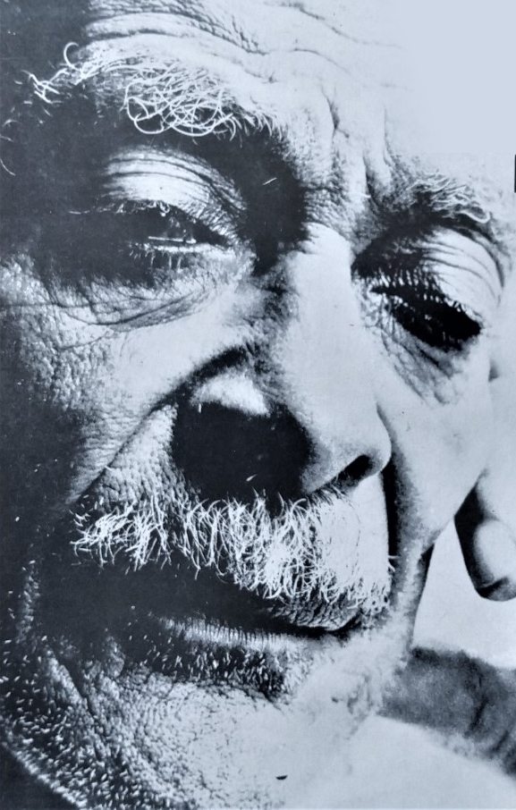
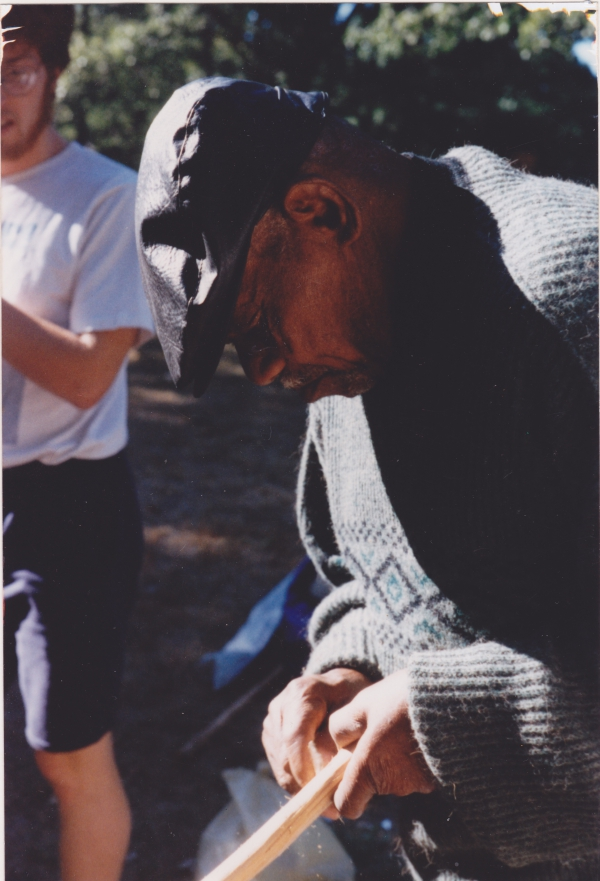
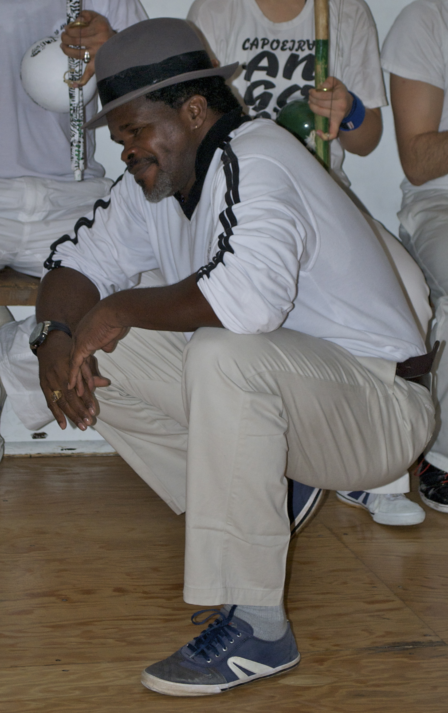
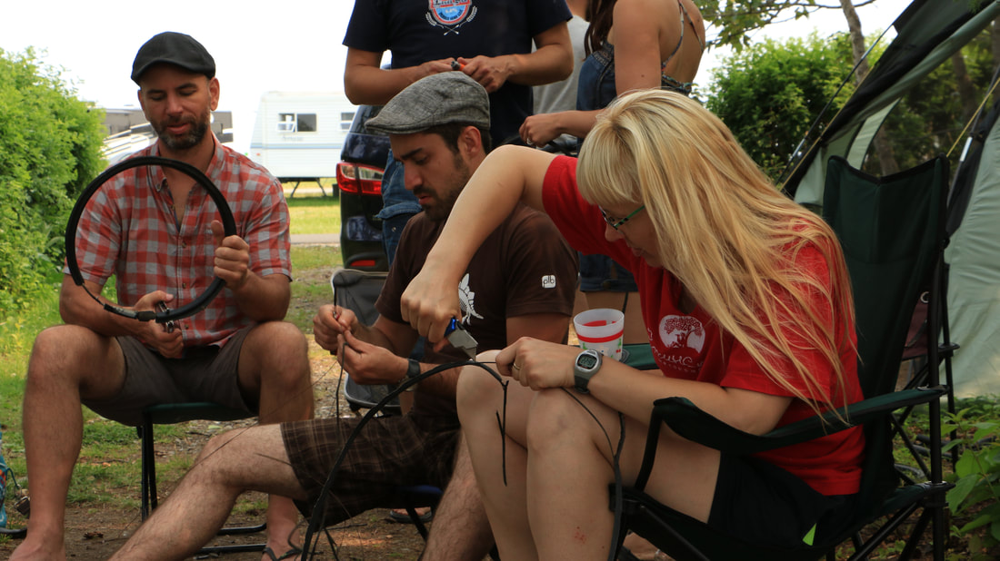

This history of Capoeira Angola is punctuated by historic moments and it is difficult to give a summary that does justice to the survival of this art which has gone through many pitfalls and overcome a long period of prohibition. Capoeira Angola was born among slaves in Brazil. Slave owners quickly recognized the dangerous potential of this art. They therefore passed laws to prohibit the practice (1890). Capoeira survives this period of prohibition thanks to the imagination and resilience of slaves. It was in the early 1930s that Capoeira emerged and began to gain recognition among political elites, the era of prohibition was coming to an end and Capoeira was slowly taking root among all strata of Brazil. Several academies were created and Capoeira began to spread throughout the world, the only martial art coming from the Americas. In 2014, UNESCO added Capoeira to its representative list of the intangible cultural heritage of humanity. Capoeira Angola is a real tool for awakening and social awareness.
Vincente Ferreira Pastinha was born on April 5, 1889 and died on November 13, 1981. As a child, he was small and frail, his neighbor, an old Angolan, Benedito, taught him the basics of Capoeira. This is how he begins to practice and how he will later want to share his knowledge. Among his many occupations, he became a sailor and taught to his colleagues in the navy. When Mestre Bimba created the regional style, Mestre Pastinha wanted to dedicate himself to the preservation of more traditional capoeira, refusing to include techniques that come from other combat arts. It was at this moment that the Capoeira he practiced became Capoeira Angola. And the Capoeira Mestre Bimba, first named Luta Baiana Regional (Capoeira till being outlawed at that time), became Capoeira Regional. Mestre Pastinha was also one of the first to write a book on Capoeira and to develop an educational system for Capoeira Angola. He died poor and practically blind. He always advocated non-violence in the practice of Capoeira Angola. His two greatest disciples are Mestre João Pequeno and Mestre João Grande. Here is the description that the famous Brazilian writer Jorge Amado gives of Mestre Pastinha: “I see myself leaning against the window of a house in Largo do Pelourinho with next to me, an old man over seventy years old, with failing eyesight, small and agile like a cat he is talking to me. We are old friends, I don’t even remember when we met and since when I have been following his glorious trajectory. He is one of the masters of Bahian popular culture, this black man with a soft voice and a happy face, who is growing old within the walls of his Capoeira Angola school, dancing and wrestling better than any of the young people with hard muscles of adolescents. I’m talking about Mestre Pastinha, one of the greatest capoeiristas Bahia has ever produced. He has just finished dancing a Samba de roda and is about to enter the Capoeira roda.” (Waldeloir Rego, op. cit., p. 274-275.)
After attending capoeira rodas, wanting to become more combative, Mestre João Pequeno began practicing Capoeira with Mestre Gilvenson, he later became one of the main disciples of Mestre Pastinha, it was he who influenced the famous Mestre João Grade to practice of Capoeira. In 1970, Mestre Pastinha said about Mestre João Pequeno: “He will be the greatest Capoeira player of the future.” He was born on December 27, 1917 and taught Capeira Angola until his death on December 9, 2011. He experienced the time when Capoeira was banned, he traveled a round the world to teach his heart. It is Colette’s encounter with Mestre João Pequeno in Boston (1992), that brings her to Salvador, where she met Mestre Jogo de Dentro (1994). Mestre João Pequeno is unavoidable in Capoeira Angola modern history.
Mestre Jogo de Dentro trained to become a master of Capoeira Angola at the Centre Esportiva de Capoeira Angola of the legendary Mestre João Pequeno, himself a disciple of another legendary figure of this art, Mestre Pastinha. In 1991, he founded the Grupo de Capoeira Semente do Jogo de Angola (GCSJA), in Salvador de Bahia. Today, the Grupo is established in several cities in Brazil, and also in Canada, France, Italy, Israel, Japan, Colombia, Costa Rica, New Zealand. Mestre Jogo de Dentro is the author of two books and six CDs (see Mercado Modelo).
The Grupo has been established since 1994, thanks to the efforts of a handful of enthusiasts. It was born from the meeting of Mestre Jogo de Dentro and Colette in December 1994. We celebrate 30 years of existence next December. First established at 10, rue des Pins west, it has been located since 1998 at 372, Sainte-Catherine west, studio 310. Training takes place 4 times a week.

A pioneer of Capoeira Angola in Canada, she has been practicing since 1990, at which time contemporary Capoeira was booming. In 1993, Colette undertook her first trip to Brazil and in 1994 during her second stay, she met in Salvador de Bahia, the man who became her mentor, Mestre Jogo de Dentro. Their alliance gave rise to countless trips by the Mestre to Montreal, and by Colette to Brazil. She established and directed the Grupo de Capoeira Semente do Jogo de Angola, in Montreal, and also taught at UQAM, McGill University, and at the YMCA for many years.

Nicolas began practicing Capoeira Angola with Colette in January 2000. He quickly became her right-hand man. Talented both in combat dance and Afro-Brazilian music and rhythms, he as the gift of sowing around him an atmosphere of conviviality and trust. Colette quickly handed over the reins to him when she was absent. In 2019, he moved to Quebec and set up a cell of the Grupo de Capoeira Semente do Jogo de Angola. In 2021, he became the first contramestre formed by Colette and the GCSJA cell in Montreal.